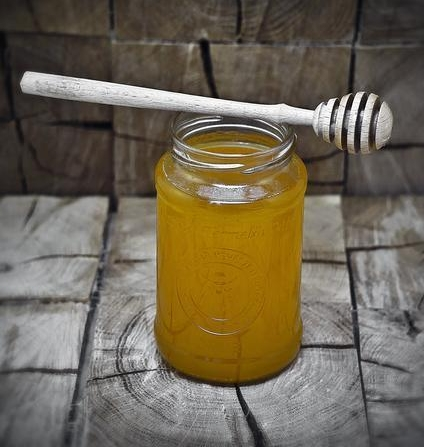
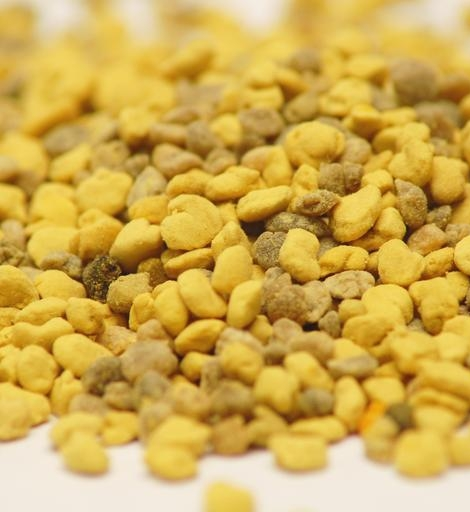

Színe csaknem színtelentől az enyhén sárga változatig terjed.
Íze kellemes, lágy, édes. Kevéssé savas mézfajta.
Magas gyümölcscukortartalma miatt sokáig folyékony marad, akár 1-2 évig is.
Gyógyhatása
Jó fertőtlenítő. Szájüreg, garat, torok antiszeptikum.
Köhögéscsillapító hatású.
Torokgyulladás kezelésére ajánlott.
A gyümölcscukor tartalmának köszönhetően májregeneráló hatással bír.
A vércukorszint szabályozásánál van fontos szerepe.
Csökkenti az izomgyengeséget, a mészhiányt.
Továbbá
Harmonikus, nem domináns íze miatt italok és sütemények ízesítésére szívesen használt édesítoszer.
Kiváló alternatíva a cukor helyett.
Kávét, teát édesítve kiemeli azok eredeti aromáját.
Vegyes virágméz

Tulajdonságai
Nem önálló fajtaméz. Különféle virágok nektárjából áll össze.
Íze és zamata változatos, elsősorban a gyűjtés helyétol függ.
Színe rendkívül változatos, általában a halványbarnástól egészen a sötétbarnáig terjed.
Összetételétől függően néhány hét vagy hónap után kristályosodik.
Gyógyhatása
Erősíti a szervezet védekező-rendszerét.
Ezt a fajta mézet értékes virágokról, gyógynövényekről gyűjtötték
a szorgalmas méhek, emiatt beltartalmilag kiváló méznek számít.
Sőt a szakemberek szerint a legértékesebb mézek közé tartozik, mivel a természetgyógyászatban is használt különféle növényekről származó nektár révén a méz hatás területe kiszélesedik.
Továbbá
Kristályosodás után óvatos melegítéssel újra folyékony állapotba hozható, de természetesebb kristályos állapotban fogyasztani.
Prosztata betegségekre, menstruációs tünetekre is jó hatással van.
Használahtó bőrproblémák, égés, herpesz esetén.
Továbbá
Érdemes tájékozódni további gyógyhatásairól is.
Virágpor

Összetétele
30% szénhidrát
26% cukor
23% fehérje
5% lipid
2% fenol vegyület (pl. flavonid)
1,6% ásványi anyag (pl. kálcium, vas, réz, cink, foszfor, magnézium)
0,6% vízben oldódó vitaminok és savak (pl. B1, B2, B6, C)
0,1% zsírban oldódó vitaminok (pl. A, E, D)
Gyógyhatása
Antioxidáns hatása jelentõs.
Máj tisztító hatású.
Erõsíti az immunrendszert.
Stressz oldó hatású.
Erõsen gyulladás csökkentõ.
Méregtelenítõ.
Étvágy javító hatású.
Antibiotikus hatású.
Virágpor kúra
A méhek által gyűjtött virágpor rengeteg vitamint, ásványi anyagot, antioxidánst, enzimet, flavonidot és még sok hasznos anyagot tartalmaz.
Korunk sok betegsége valamilyen tápanyag, ásványi anyag, vitamin stb. hiányára vezethető vissza. Virágpor fogyasztásával csökkenthető a hiánybetegségek kialaulásának valószínűsége.
Kiváló étrend kiegészítő.
Felnőttek számára 20-40g virágpor bevitel ajánlott naponta. Ez 3-5 teáskanál virágpor fogyasztását jelenti. Gyerekek számára elegendő 1-2 teáskanálnyi naponta.
Leghatékonyabb, ha étkezések előtt háromszor fogyasztjuk éhgyomorra.
A kúra hossza 1-3 hónap lehet. 2-4 alkalommal ismételhető egy év során.
Könnyebben emészthetővé tehetjük a napi adagunkat, ha apróra őröljük a virágpor darabokat vagy langyos vízben feloldjuk. Legjobb, ha ilyenkor 2-3 órát állni hagyjuk. Víz helyett használhatunk tejet, gyümölcs vagy zöldség levet is.
 napok
napok